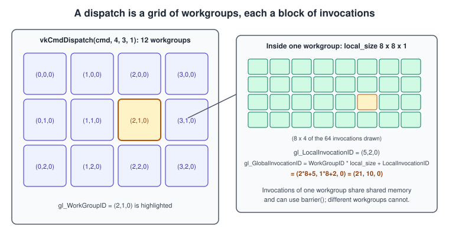
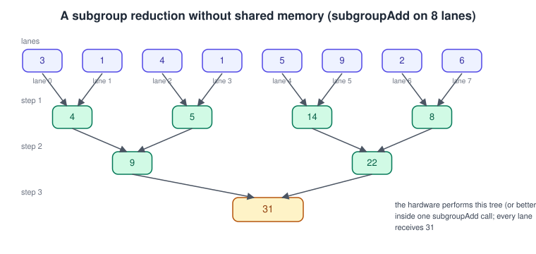
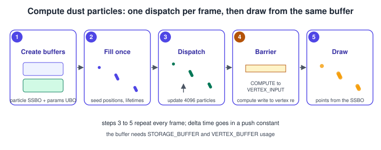

Compute Shaders and Subgroups
|
This content was generated with the assistance of AI and should be verified against the official documentation before being relied on in production. |
A compute shader is a program that is not part of the graphics pipeline: it has no vertices, no rasterizer and no render target, only buffers and images that it reads and writes. You launch a grid of workgroups, and each workgroup is a block of invocations that can cooperate through fast shared memory. Compute is how a Vulkan renderer does particle simulation, culling, skinning, image processing, mip chains, prefix sums and, more and more, machine learning. This page covers the compute pipeline, the dispatch model, shared memory and synchronisation inside a workgroup, atomics, the subgroup operations that let neighbouring invocations talk without memory, cooperative matrices, and the limits that decide how large a workgroup may be.
The facts were checked in November 2026. The page documents Vulkan 1.4 (headers 1.4.3xx, LunarG SDK 1.4.363.0) and notes where a
feature needs only Vulkan 1.3, which is the minimum of the running example, or an extension. Compute is mandatory in practice: every
Vulkan 1.0 implementation that exposes a queue family with VK_QUEUE_COMPUTE_BIT can run compute pipelines, and the specification
guarantees that a queue family with graphics support also supports compute. The code uses C++20 with Vulkan-Hpp and Slang, with GLSL
shown as an alternative; the host-side setup is explained in Vulkan-Hpp, RAII and C++ Bindings.
This is the compute step of the Vulkan Bookshelf running example: dust particles drifting in the lamp light. The step before it is the textured book of Bookshelf 01; the step after builds the scene in Bookshelf 02. For the general idea of GPU parallelism read The Rendering Pipeline; other APIs have the same concepts under other names, for example the Metal pages in Metal.
The execution model

Four levels matter, from largest to smallest:
| Level | What it is | Notes |
|---|---|---|
Dispatch |
One |
The counts are |
Workgroup |
A block of invocations that run concurrently on one compute unit of the GPU and can use shared memory and |
The size is fixed in the shader ( |
Subgroup |
A set of invocations of one workgroup that execute together in lockstep or nearly so. This is what other APIs call a wave (HLSL), a warp (NVIDIA) or a SIMD group (Metal). |
The size is a hardware property, commonly 32 or 64, and on some GPUs 16 or 128 (see below). Subgroup operations exchange data between lanes without touching memory. |
Invocation |
One thread of the shader. |
Identified by built-ins such as |
Workgroups of one dispatch may run in any order and in parallel, and nothing in the language lets one workgroup wait for another.
Cross-workgroup communication therefore needs atomics on a buffer, a second dispatch, or a pipeline barrier between dispatches. Within a
workgroup, invocations may also diverge, but barrier() must be reached by all of them in uniform control flow.
The global invocation ID is computed by
\[ \text{ global } = \text{ workGroupID } \cdot \text{ localSize } + \text{ localInvocationID } \]
so a one-dimensional job of \( n \) items needs \( \lceil n / \text{ localSize } \rceil \) workgroups, and the shader must ignore the invocations whose ID is not below \( n \).
Choosing a workgroup size
-
Make the total a multiple of the subgroup size. 64 or 128 invocations is a safe starting point for one-dimensional jobs; 8 x 8 for images.
-
Larger is not better. Big workgroups limit occupancy because shared memory and registers are allocated per workgroup.
-
Use two- or three-dimensional sizes when the data is two- or three-dimensional, so neighbouring invocations touch neighbouring texels and share cache lines.
-
Do not hard-code a subgroup size. Query it (below) or use specialization constants to set the workgroup size from the host.
-
The size of the workgroup can be made a specialization constant (
layout(local_size_x_id = 0)in GLSL), which keeps one SPIR-V module usable for several devices; see Shaders, SPIR-V and Shading Languages.
The compute pipeline
A compute pipeline is the simplest pipeline in Vulkan: one shader stage and a pipeline layout. It has no fixed-function state.
// Assumes: vk::raii::Device device; vk::raii::PipelineLayout layout;
// std::vector<uint32_t> spirv (compiled compute shader, entry point "main")
vk::ShaderModuleCreateInfo moduleInfo{};
moduleInfo.codeSize = spirv.size() * sizeof(uint32_t);
moduleInfo.pCode = spirv.data();
vk::raii::ShaderModule shaderModule{device, moduleInfo};
vk::PipelineShaderStageCreateInfo stage{};
stage.stage = vk::ShaderStageFlagBits::eCompute;
stage.module = *shaderModule;
stage.pName = "main";
vk::ComputePipelineCreateInfo pipelineInfo{};
pipelineInfo.stage = stage;
pipelineInfo.layout = *layout;
vk::raii::Pipeline computePipeline{device, nullptr, pipelineInfo}; // second argument: optional pipeline cacheSource: Vulkan specification: Pipelines
Useful options of VkComputePipelineCreateInfo and its stage:
-
Specialization constants (
pSpecializationInfo) turn workgroup sizes or loop bounds into compile-time constants at pipeline creation. -
Pipeline cache: pass a
VkPipelineCacheso that the driver can reuse compiled code; see Graphics Pipeline Overview for the cache itself. -
Required subgroup size: chain
VkPipelineShaderStageRequiredSubgroupSizeCreateInfo(core since 1.3) to force one of the sizes the device supports. -
VK_PIPELINE_CREATE_DISPATCH_BASE_BIT(in the pipeline create flags) must be set for a pipeline that is used withvkCmdDispatchBase.
Shader modules can also be skipped altogether: with maintenance5 (core in 1.4) a VkPipelineShaderStageCreateInfo can carry the SPIR-V in its pNext
chain, and with VK_EXT_shader_object compute shaders become objects bound directly; both are described in
Dynamic State, Shader Objects and Pipeline Libraries.
Dispatching
cmd.bindPipeline(vk::PipelineBindPoint::eCompute, *computePipeline);
cmd.bindDescriptorSets(vk::PipelineBindPoint::eCompute, *layout, 0, {*descriptorSet}, {});
cmd.pushConstants<PushData>(*layout, vk::ShaderStageFlagBits::eCompute, 0, pushData);
constexpr uint32_t localSize = 64;
cmd.dispatch((particleCount + localSize - 1) / localSize, 1, 1);Source: vkCmdDispatch reference page
The three dispatch commands:
| Command | Use |
|---|---|
|
Group counts come from the CPU. |
|
Group counts are read from a buffer ( |
|
Like |
A dispatch must be recorded outside a render pass instance (outside vkCmdBeginRendering / vkCmdEndRendering) and on a queue whose family supports compute.
A dedicated compute queue family can run in parallel with graphics work (asynchronous compute); sharing resources between the families needs
ownership transfers or VK_SHARING_MODE_CONCURRENT, covered in Synchronization and Sync2.
Resources and layout of compute data
A compute shader reaches memory through descriptors (storage buffers, uniform buffers, storage images, sampled images) or through push constants, see Descriptors and Push Constants. Two details cause most compute bugs:
-
Storage images must be in
VK_IMAGE_LAYOUT_GENERAL(or the shared-present layouts) and created withVK_IMAGE_USAGE_STORAGE_BIT; not every format supports storage use, so checkVK_FORMAT_FEATURE_STORAGE_IMAGE_BIT(and, for typed reads without a format qualifier,shaderStorageImageReadWithoutFormat). The format qualifier in the shader (rgba8,rgba16f) must match the view. -
Buffer layout: arrays of structs in a storage buffer follow std430 (or scalar layout when
scalarBlockLayoutis enabled, core since 1.2). Avec3member is aligned to 16 bytes under std430, which breaks a tightly packed C++ struct. See Shader Memory Layout.
Shared memory and barriers
Shared memory (shared in GLSL, groupshared in HLSL and Slang, the Workgroup storage class in SPIR-V) is on-chip memory visible to every invocation of one workgroup.
It is typically 16 KiB or more per workgroup (maxComputeSharedMemorySize guarantees at least 16384 bytes; many GPUs offer 32 KiB or 48 KiB and more) and is far faster than a storage buffer.
Its contents are undefined when the workgroup starts, unless the device supports zero initialisation of workgroup memory (shaderZeroInitializeWorkgroupMemory, core since 1.3), in which case a shader can use an initialiser.
The classic pattern is load, synchronise, compute, as in a parallel sum:
#version 450
layout(local_size_x = 128) in;
layout(std430, set = 0, binding = 0) readonly buffer Input { float values[]; } inData;
layout(std430, set = 0, binding = 1) writeonly buffer Output { float sums[]; } outData;
layout(push_constant) uniform Push { uint count; } pc;
shared float scratch[128];
void main() {
uint gid = gl_GlobalInvocationID.x;
uint lid = gl_LocalInvocationID.x;
scratch[lid] = (gid < pc.count) ? inData.values[gid] : 0.0;
barrier(); // every write above is visible below
for (uint stride = 64u; stride > 0u; stride >>= 1u) {
if (lid < stride) {
scratch[lid] += scratch[lid + stride];
}
barrier(); // must be reached by all invocations
}
if (lid == 0u) {
outData.sums[gl_WorkGroupID.x] = scratch[0];
}
}Source: Vulkan Guide: Shader features
Rules for barriers:
-
barrier()(GLSL),GroupMemoryBarrierWithGroupSync()(HLSL) andOpControlBarrier(SPIR-V) synchronise execution of the workgroup and order shared-memory accesses. In GLSL compute shadersbarrier()also orders shared memory writes; for buffer or image writes you additionally needmemoryBarrierBuffer()ormemoryBarrierImage(). -
The barrier must be in uniform control flow: every invocation of the workgroup reaches the same barrier. A barrier inside a divergent
ifis undefined behaviour and can hang the GPU. -
A barrier makes data visible inside one workgroup only. It never orders accesses between workgroups.
Two related extensions are worth knowing. VK_KHR_workgroup_memory_explicit_layout lets a shader give shared memory an explicit layout, so one array can be reused with different types
in different phases; and VK_KHR_zero_initialize_workgroup_memory was promoted to core in Vulkan 1.3.
Atomics and the memory model
Atomic operations let invocations of different workgroups update one location safely. The common ones are atomicAdd, atomicMin, atomicMax, atomicExchange
and atomicCompSwap on 32-bit integers in buffers or shared memory (always available), plus:
-
64-bit integer atomics:
shaderBufferInt64AtomicsandshaderSharedInt64Atomics(core 1.2). -
Floating-point atomics: the
VK_EXT_shader_atomic_floatandVK_EXT_shader_atomic_float2extensions with per-operation feature bits. -
Image atomics: the format must support
VK_FORMAT_FEATURE_STORAGE_IMAGE_ATOMIC_BIT.
A frequent pattern is a global counter, for example appending visible instances to a list (atomic increment returns the slot index). Atomics on one hot address serialise; reduce within the subgroup or workgroup first, then issue one atomic per subgroup or per workgroup.
The Vulkan memory model (core since Vulkan 1.2, vulkanMemoryModel feature, formerly VK_KHR_vulkan_memory_model) defines precisely when writes by one invocation are visible to others,
through availability and visibility operations, scopes (invocation, subgroup, workgroup, queue family, device) and semantics (acquire, release). Plain GLSL with coherent
and memoryBarrier* is enough for most code; use the memory model through GL_KHR_memory_scope_semantics or Slang when you write lock-free algorithms such as decoupled look-back prefix sums.
The books of the 2016 era predate this model; see the table at the end.
Subgroups

A subgroup is the hardware’s natural unit of execution. Operations at subgroup scope read registers of other lanes directly, which is faster than shared memory and needs no barrier.
Since Vulkan 1.1 they are part of the core API, and the SPIR-V instructions are OpGroupNonUniform*.
Querying support
Chain VkPhysicalDeviceSubgroupProperties (or the subgroupSize, subgroupSupportedStages and subgroupSupportedOperations members of VkPhysicalDeviceVulkan11Properties) into vkGetPhysicalDeviceProperties2:
vk::StructureChain<vk::PhysicalDeviceProperties2, vk::PhysicalDeviceSubgroupProperties> chain =
physicalDevice.getProperties2<vk::PhysicalDeviceProperties2, vk::PhysicalDeviceSubgroupProperties>();
const auto& sg = chain.get<vk::PhysicalDeviceSubgroupProperties>();
bool computeOk = bool(sg.supportedStages & vk::ShaderStageFlagBits::eCompute);
bool hasBallot = bool(sg.supportedOperations & vk::SubgroupFeatureFlagBits::eBallot);
bool hasArith = bool(sg.supportedOperations & vk::SubgroupFeatureFlagBits::eArithmetic);
uint32_t subgroupSize = sg.subgroupSize; // 32 on many GPUs, 64 on some, other values existSource: Vulkan Guide: Subgroups
The guarantees are that VK_SHADER_STAGE_COMPUTE_BIT is supported when any queue supports compute, and that VK_SUBGROUP_FEATURE_BASIC_BIT is supported when any queue supports graphics or compute.
Everything else must be checked. The operation groups are:
| Feature bit | GLSL (GL_KHR_shader_subgroup_*) examples |
|---|---|
|
|
|
|
|
|
|
|
|
|
|
|
|
|
Also available: GL_EXT_shader_subgroup_extended_types_* allows 8-, 16- and 64-bit integers and 16-bit floats in these operations (core in 1.2, feature shaderSubgroupExtendedTypes),
and subgroup rotate (VK_KHR_shader_subgroup_rotate, core in Vulkan 1.4) rotates values among lanes. For the other operations, check the properties or features instead of assuming them.
An example: subgroup-first reduction
The shared-memory sum above can be written so that most of the work happens in registers. Each subgroup reduces its lanes with subgroupAdd, one lane per subgroup writes the partial result
to shared memory, and the first subgroup reduces those:
#version 450
#extension GL_KHR_shader_subgroup_arithmetic : require
layout(local_size_x = 128) in;
layout(std430, set = 0, binding = 0) readonly buffer Input { float values[]; } inData;
layout(std430, set = 0, binding = 1) writeonly buffer Output { float sums[]; } outData;
layout(push_constant) uniform Push { uint count; } pc;
shared float partial[32]; // enough for 128 invocations if the subgroup size is 4 or more
void main() {
uint gid = gl_GlobalInvocationID.x;
float v = (gid < pc.count) ? inData.values[gid] : 0.0;
float sgSum = subgroupAdd(v); // step 1: reduce inside the subgroup
if (subgroupElect()) {
partial[gl_SubgroupID] = sgSum; // step 2: one lane per subgroup
}
barrier();
if (gl_SubgroupID == 0u) {
float p = (gl_SubgroupInvocationID < gl_NumSubgroups) ? partial[gl_SubgroupInvocationID] : 0.0;
float total = subgroupAdd(p); // step 3: reduce the partials
if (subgroupElect()) {
outData.sums[gl_WorkGroupID.x] = total;
}
}
}Source: Vulkan Guide: Subgroups
gl_SubgroupID and gl_NumSubgroups need GL_KHR_shader_subgroup_basic, which is implied by the arithmetic extension. The code assumes that a subgroup has at least four lanes,
which holds on every current desktop, mobile and Apple-translated implementation; a production shader asserts it on the host from subgroupSize.
Subgroup size control
The subgroup size can differ between GPUs and, on some GPUs, between pipelines. VK_EXT_subgroup_size_control was promoted to core in Vulkan 1.3 and adds:
-
minSubgroupSizeandmaxSubgroupSizeinVkPhysicalDeviceSubgroupSizeControlProperties(alsoVkPhysicalDeviceVulkan13Properties); -
the
subgroupSizeControlfeature, which lets the size vary and be reported more accurately; -
the
computeFullSubgroupsfeature, which guarantees that workgroup sizes that are multiples of the subgroup size fill every subgroup (flagVK_PIPELINE_SHADER_STAGE_CREATE_REQUIRE_FULL_SUBGROUPS_BIT); -
VkPipelineShaderStageRequiredSubgroupSizeCreateInfo, which asks for one specific size within the reported range.
Use it for algorithms that depend on a size, for example a ballot-based scan written for 32 lanes. If the device cannot give that size, choose the generic shared-memory path instead.
Without it, the size seen in the shader (gl_SubgroupSize) may be smaller than the value reported by the properties, and some lanes may be inactive.
Divergence and common mistakes
-
Subgroup operations act on the active lanes. Inside a divergent branch only the lanes that took it participate, so
subgroupAddreturns the sum of those lanes only. The extensionVK_KHR_shader_subgroup_uniform_control_flowandVK_KHR_shader_maximal_reconvergencegive stronger guarantees about which lanes are active; do not rely on reconvergence otherwise. -
The helper invocations of fragment shaders and the lanes beyond the workgroup size (when the workgroup is not a multiple of the subgroup) are not "real" work; handle them with
gl_SubgroupInvocationIDchecks. -
Subgroup size is not a portable constant. Code that hard-codes 32 breaks on GPUs with 64 lanes and on devices that report a range.
-
Mixing a subgroup operation with an unrelated early
returnordiscardleaves the remaining lanes active in a smaller set than you expect.
Cooperative matrices
VK_KHR_cooperative_matrix exposes matrix-multiply hardware (tensor cores and equivalents) to shaders. A cooperative matrix is a small matrix distributed across the lanes of a subgroup,
and a single operation multiplies and accumulates whole tiles. The extension is ratified and is a device extension: it is not part of core Vulkan 1.4.
-
Enable the
cooperativeMatrixfeature inVkPhysicalDeviceCooperativeMatrixFeaturesKHR. -
Enumerate the supported combinations of types, tile sizes and scope with
vkGetPhysicalDeviceCooperativeMatrixPropertiesKHR; there is no universal size, and the list is device specific. -
In shaders it appears as
GL_KHR_cooperative_matrix(SPIR-V extensionSPV_KHR_cooperative_matrix, capabilityCooperativeMatrixKHR).
Typical use is a tiled matrix multiplication in half precision with accumulation in 16- or 32-bit floats, for image upscalers and neural networks. A renderer such as the Bookshelf does not need it; it is listed so that you recognise it in other code. Always provide a plain compute fallback.
The Bookshelf dust particles
The Bookshelf scene gets drifting dust in the light of the desk lamp. 4096 particles live in one storage buffer. A compute dispatch advances them every frame, then the same buffer is drawn as points
(the buffer has both STORAGE_BUFFER and VERTEX_BUFFER usage), so no data travels back to the CPU.

The shader in Slang
struct Particle {
float3 position;
float life;
float3 velocity;
float size;
};
struct Push {
float deltaTime;
float time;
uint count;
};
[[vk::binding(0, 0)]] RWStructuredBuffer<Particle> particles;
[[vk::push_constant]] ConstantBuffer<Push> push;
[shader("compute")]
[numthreads(64, 1, 1)]
void main(uint3 id : SV_DispatchThreadID) {
if (id.x >= push.count) return;
Particle p = particles[id.x];
float3 drift = float3(sin(push.time + p.position.y * 3.0), -0.05, cos(push.time + p.position.x * 3.0)) * 0.1;
p.position += (p.velocity + drift) * push.deltaTime;
p.life -= push.deltaTime;
if (p.life <= 0.0) { // respawn near the lamp
p.position = float3(0.0, 1.5, 0.0) + p.velocity * 2.0;
p.life = 6.0;
}
particles[id.x] = p;
}Source: Vulkan Guide: Shader features and Slang user guide
Compile with slangc dust.slang -target spirv -entry main -stage compute -o dust.comp.spv (the Slang attribute [shader("compute")] selects the stage when the file is compiled with -target spirv).
With the default std430 layout the struct above is 32 bytes because each float3 is followed by a float, so a host struct with the same field order and sizes matches it.
The same shader in GLSL
#version 450
layout(local_size_x = 64) in;
struct Particle { vec3 position; float life; vec3 velocity; float size; };
layout(std430, set = 0, binding = 0) buffer Particles { Particle particles[]; };
layout(push_constant) uniform Push { float deltaTime; float time; uint count; } pc;
void main() {
uint i = gl_GlobalInvocationID.x;
if (i >= pc.count) return;
Particle p = particles[i];
vec3 drift = vec3(sin(pc.time + p.position.y * 3.0), -0.05, cos(pc.time + p.position.x * 3.0)) * 0.1;
p.position += (p.velocity + drift) * pc.deltaTime;
p.life -= pc.deltaTime;
if (p.life <= 0.0) {
p.position = vec3(0.0, 1.5, 0.0) + p.velocity * 2.0;
p.life = 6.0;
}
particles[i] = p;
}Source: Vulkan Guide: Shader features
Compile with glslc dust.comp -o dust.comp.spv. The HLSL version is the Slang code without the [shader("compute")] attribute, compiled with dxc -spirv -T cs_6_0 -E main.
Host side: buffer, descriptor and per-frame recording
#include <vulkan/vulkan_raii.hpp>
#include <vk_mem_alloc.h>
struct Particle { float position[3]; float life; float velocity[3]; float size; };
static_assert(sizeof(Particle) == 32);
struct DustPush { float deltaTime; float time; uint32_t count; };
// One-time setup. Assumes: device, VMA allocator, descriptor pool, pipeline layout with one storage buffer at set 0 binding 0.
constexpr uint32_t kParticles = 4096;
VkBufferCreateInfo bufInfo{VK_STRUCTURE_TYPE_BUFFER_CREATE_INFO};
bufInfo.size = kParticles * sizeof(Particle);
bufInfo.usage = VK_BUFFER_USAGE_STORAGE_BUFFER_BIT | VK_BUFFER_USAGE_VERTEX_BUFFER_BIT | VK_BUFFER_USAGE_TRANSFER_DST_BIT;
VmaAllocationCreateInfo allocInfo{};
allocInfo.usage = VMA_MEMORY_USAGE_AUTO_PREFER_DEVICE;
VkBuffer particleBuffer; VmaAllocation particleAlloc;
vmaCreateBuffer(allocator, &bufInfo, &allocInfo, &particleBuffer, &particleAlloc, nullptr);
// ...fill it once through a staging buffer (see Memory, Heaps, Types and VMA)
vk::DescriptorBufferInfo bufferInfo{particleBuffer, 0, VK_WHOLE_SIZE};
vk::WriteDescriptorSet write{*descriptorSet, 0, 0, 1, vk::DescriptorType::eStorageBuffer, nullptr, &bufferInfo};
device.updateDescriptorSets(write, {});
// Every frame, before the render pass:
void recordDust(vk::raii::CommandBuffer& cmd, float dt, float t) {
cmd.bindPipeline(vk::PipelineBindPoint::eCompute, *dustPipeline);
cmd.bindDescriptorSets(vk::PipelineBindPoint::eCompute, *dustLayout, 0, {*descriptorSet}, {});
DustPush push{dt, t, kParticles};
cmd.pushConstants<DustPush>(*dustLayout, vk::ShaderStageFlagBits::eCompute, 0, push);
cmd.dispatch((kParticles + 63) / 64, 1, 1);
vk::MemoryBarrier2 barrier{};
barrier.srcStageMask = vk::PipelineStageFlagBits2::eComputeShader;
barrier.srcAccessMask = vk::AccessFlagBits2::eShaderStorageWrite;
barrier.dstStageMask = vk::PipelineStageFlagBits2::eVertexAttributeInput;
barrier.dstAccessMask = vk::AccessFlagBits2::eVertexAttributeRead;
vk::DependencyInfo dep{};
dep.memoryBarrierCount = 1;
dep.pMemoryBarriers = &barrier;
cmd.pipelineBarrier2(dep);
}The barrier is the part that is easy to forget: the next frame’s compute dispatch also writes the buffer while the previous frame’s draw may still read it, so frames in flight need either a second barrier (vertex read to compute write) or one particle buffer per frame in flight; see Timeline Semaphores and Frames in Flight. The memory is covered in Memory, Heaps, Types and VMA.
Limits to query
Limit (in VkPhysicalDeviceLimits unless noted) |
Guaranteed minimum | Meaning |
|---|---|---|
|
65535 each |
Groups per dispatch dimension. |
|
128 |
Invocations in a workgroup. |
|
128, 128, 64 |
Per-axis workgroup size. |
|
16384 bytes |
Shared memory per workgroup. |
|
4 and 128 bytes |
Shared with graphics; see the descriptor pages. |
|
none |
Size seen by the shader; with subgroup size control also |
These are minimums; real desktop GPUs report much more, but portable code (mobile, MoltenVK, KosmicKrisp) should stay within the minimums or query and adapt. Profiles can require higher values; see Versions, Profiles and Extensions.
Common mistakes
-
Forgetting the bounds check (
if (id.x >= count) return;) when the dispatch rounds up to a whole number of workgroups. -
Putting
barrier()in non-uniform control flow, or after an earlyreturn. -
A missing pipeline barrier between the compute write and the consumer, or a barrier with the wrong stage (
BOTTOM_OF_PIPEis a legacy idiom; name the real stages). -
Reading and writing the same storage buffer element from different workgroups without atomics or ordering.
-
Using
vec3in a struct that the CPU lays out tightly. -
Assuming a subgroup size or that all
VK_SUBGROUP_FEATURE_*bits exist. -
Using too much shared memory per workgroup, which silently lowers occupancy.
Performance notes
-
Prefer a few large dispatches to many tiny ones; each dispatch and its barrier has a fixed cost.
-
Keep memory access coalesced: consecutive invocations should touch consecutive addresses.
-
Use subgroup operations and shared memory instead of atomics on global memory.
-
On tile-based GPUs (most phones) compute dispatches between render passes force the tile memory to be flushed. Group them together, see Multithreading and Performance.
-
Use asynchronous compute only when the work overlaps graphics work that does not contend for the same resources, and measure.
-
Time dispatches with timestamp queries; see Debugging and Capture Tools for GPU profilers.
Where the older books are outdated
The Vulkan Programming Guide (VPG, 2016, Vulkan 1.0) and the Vulkan Cookbook (VCB, 2017, Vulkan 1.0) both cover compute with the Vulkan 1.0 model.
| Topic | Older books (VPG ch. 6, VCB ch. 7, 8, 12) | Today |
|---|---|---|
Compile step |
GLSL through |
|
Barriers |
|
|
Subgroups |
Not covered (introduced with Vulkan 1.1 in 2018) |
Core since 1.1, with extended types in 1.2, subgroup size control in 1.3 and subgroup rotate in 1.4. |
Memory model |
Not covered |
The Vulkan memory model is mandatory-to-support in 1.2 and later; it defines the scopes and semantics of atomics and barriers. |
Cooperative matrices |
Not covered |
|
Workgroup size |
Fixed at shader compile time |
Specialization constants, |
Shader objects |
Always a pipeline and a shader module |
|
Function loading (VCB) |
Hand-written function loaders |
volk or the Vulkan-Hpp dispatcher. |
See it in
The general concept is introduced in The Rendering Pipeline. The same compute idea in the other sub-sections: Metal (compute command encoders and SIMD-group functions) and OpenGL (compute shaders since OpenGL 4.3). Vulkan neighbours: Mesh and Task Shaders, which use the same workgroup model inside the graphics pipeline.